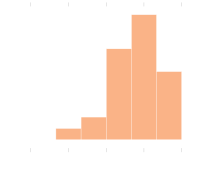
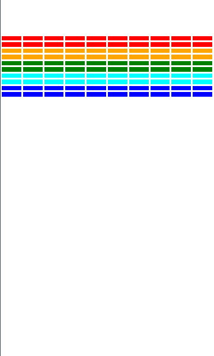
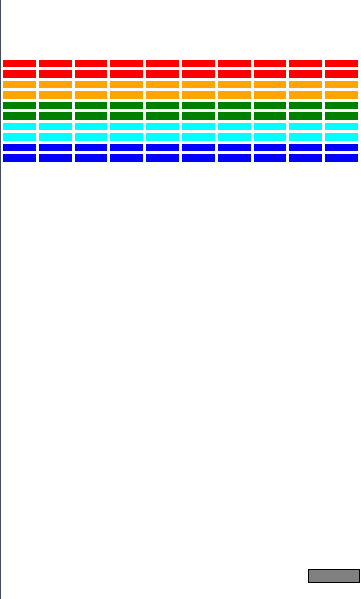
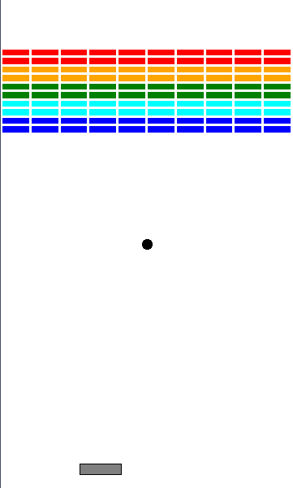
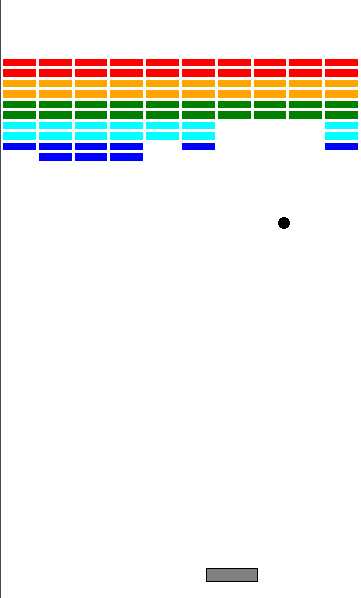

Introducing Lists
Jed Rembold
March 2, 2026
Happy Monday!
- Scan the QR code or go to https://tools.jedrembold.prof/daily
- Fun group question: What do you most common use-case for a list?

Quick Announcements
- Exam scoring is done! We’ll talk more about it in just a moment
- PS4 is due tonight
- Project 2 goes live today! Guide will be up before the end of the
day.
- You have everything you need to complete it already!
Midterm 1 Debrief

- Final breakdown:
- Average: 78.4%
- Median: 80.7%
- St Dev: 15.6%
Group Problems
Problem 1: Tracing Understanding
What would the below expression evaluate to? Or would it error out?
['One', 2, True][-1:1:-1][0]Problem 2: Airline Boarding
This is a coding problem, work in pairs or trios on a single computer
In
manifest.py, I’ve created a list of passenger information for an airlineThe list has passenger information in a “name”, “age”, “seat” ordering
So, for example, the first few passengers look like:
MANIFEST = [ "Anthony Hutchinson", 77, "24A", "Carol Turner", 37, "8F", ...etc... ]
Problem 2b: Seat Taken?
- In
Prob2.py, you can add your code - Imagine a passenger would like to switch seats. It would be nice to have an easy function to check a potential seat assignment and determine if it is available
- Complete the function
is_seat_availableto check to see if a particular seat is available (not currently assigned) - BONUS: Sometimes robots will ride the plane with names like ‘2F’. Make sure your function still would work properly in that case
Problem 2c: New Family
- Switch who is typing!
- A new family purchased tickets late! Add their information to the
manifest.
- Bill Yu, age 43, in seat 15C
- Jackie Yu, age 39, in seat 15B
- Hayden Yu, age 12, in seat 15A
- Then, complete the function
avg_age_window_seats, which returns the average age of all passengers riding in a window seat (“A” and “F” seats)
Breakout
Project 2: Breakout!
- Project 2 is recreating the classic arcade game Breakout!
- Guide is posted now, due next Monday
- Get an early start! Finish up PS4 tonight as needed, but start Breakout tomorrow!
Breakout History
- The popular Breakout arcade game was released by Atari in 1976
- Atari founder Nolan Bushnell wanted a new game that would build on the success of the earlier game Pong. He assigned Steve Jobs to develop the game, promising a bonus if the game required a small number of chips.
- As Wikipedia tells the story, “Jobs had little specialized knowledge of circuit board design but knew [his friend Steve] Wozniak was capable of producing chip efficient designs. He convinced Wozniak to work with him, promising to split the fee evenly between them.”
- Wozniak completed the game design in four days, but Jobs never told him about the bonus offer. Jobs was paid \(\$5,000\), but Wozniak received only \(\$350\).
- Jobs and Wozniak co-founded Apple Computer the following year, which has grown to be the largest corporation in the world by market capitalization.
Breakout Basics
- Breakout is a game in which the player attempts to break all the colored bricks by causing a bouncing ball to collide with them
- The player controls a paddle at the bottom of the screen which the
ball will bounce off
- The paddle can only move left and right
- If the ball makes it past the paddle to the bottom of the screen,
the player loses a life
- Lose 3 lives and it is game over!
Breakout Milestones
- Breakout is broken up over 5 milestones
- You have already seen or written pieces of similar code to many of
the milestones!
- Milestone 0: PS4 brick pyramid
- Milestone 1: Section stamping problem (last week)
- Milestone 2: Section bouncy Pacman problem (this week)
- Milestone 3: Section Hungry Pacman problem (this week)
Milestone 0
- Goals is to lay out all the bricks
- Choose a brick color as a function of row number
- Play with the provided constants to make sure your program reacts!

Milestone 1
- Display paddle near bottom of screen
- Add mouse event listener for whenever the mouse moves
- Update x-position of paddle to stay centered on mouse
- Don’t let any part of the paddle move beyond the edges of the screen

Milestone 2

- Add ball to center of screen
- Make it start moving when clicking the mouse
- Ball bounces off walls, ignores all bricks and paddle
Milestone 3
- Time to get things colliding!
- Check for collisions
- If collision with paddle, bounce ball upwards
- If collision with brick, bounce ball and remove brick

Milestone 4
- Lose a life when going off the bottom of the world
- Track lives, and reset ball after losing a life
- Check for win condition
- Test, test, test!
General Recommendations
- As always, do not go on to the next milestone until 100% sure your current milestone is perfect
- Get an early start, and chip away at a milestone or so each day
- Section problems mostly deal with milestones 2 and 3
- Reach out for help if you are struggling
- Remember: stuck for more than 30 minutes on a single problem. Put it away and reach out to someone.